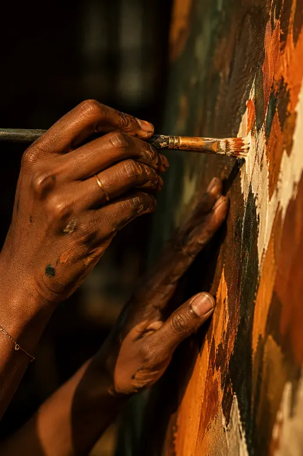

L'artiste
Peindre ce que les mots taisent.
Indirah est artiste peintre. Elle construit, toile après toile, un langage fait de figures, d'émotions et d'histoires.
Peindre, c'est raconter ce que les mots ne savent pas dire.

Démarche
Entre la main et le silence
Son travail explore ce qui la traverse et cherche le point de rencontre entre ce que l'on voit et ce que l'on ressent.
Une présence
Ses figures ne livrent pas tout. Elles invitent le regard à s'approcher, à s'arrêter et à inventer sa propre lecture.